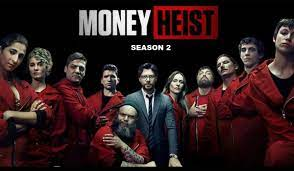
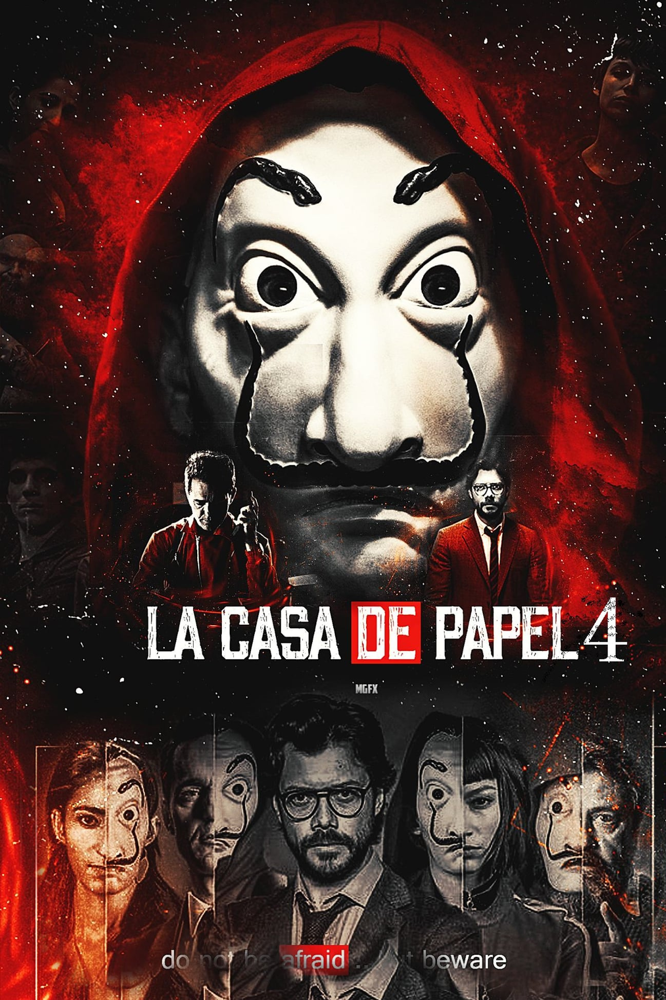

MONEY HEIST

Ratings
IMDb: 8.4/10
Movie Matrix: 8.7/10
After the great rule of bollywood and Hollywood content over the cinemas, Spanish movie and web series makers bought a concept that hit the rocks of thrill, drama and action to a great extent. As already read from the title, the Spanish web series “La Casa De Papel”, also known as “Money Heist” in the Indian Cinema influenced the hearts and minds of people up to a great extent. The series came out to be a much liked one and thus also won 23 Awards being nominated for 30 times. Consisting of a total of 4 seasons the series includes in it a lump of Action, Crime and Thrill. The concept of the series being completely unique and extraordinary follows the story of a heist being carried out at the most known rich and known places of Spain. The series having a long concept is being divided into parts where the 1st and 2nd seasons store the thrills of first heist relating to which in the further story the 3rd and 4th season follow up to a completely different heist with completely different scenarios. Also the series includes almost the same characters throughout all the seasons which builds a feeling of affection for the characters in the hearts of audience. The series includes a huge cast, thus giving a you a gist of the main lead we then begin with the reviews of each season individually.
Lead Characters
· Tokio
· Professor
· Raquel Murillo
· Berlin
· Rio
· Denver
· Monica Gaztambide
· Arthuro Roman
· Helsinki
· Nairobi
SEASON 1 (2017)
The first season of the series is the beginning of the greatest heist that ever took place in Spain.
The season consists of a total of 13 episodes according to the Indian Netflix which extend to a duration of 40-60 minutes each. The series was released in 2017 and was a great hit in the Indian Netflix scenario. Being away from the English scenario the season was originally launched in Spanish whose English translation was made available by Netflix India
The first season of the series unlike the others , starts with a thrill showing the beginning of the greatest heist at Royal Mint of Spain that ever took place in the Spanish history. The story in the background is narrated by one of the lead characters of the series , in flashback it also depicts the planning of the heist. The professor is a learned man with a brain of deep thoughts and planning who plans the greatest heist of Spain. Thus giving his teachings to the gang members who later carry on the heist and leave the authorities empty handed. The gist of the series only will thrill you out, watching the way the heist is carried out and how the planning of the professor beats the Spanish authorities in every move will give you a feeling of respect for him.
So thrill yourself with the greatest heist ever.
SEASON 2 (2018)

If you have already watched the first season, it is quite sure that the series left you with a suspense moment and a half story of the uncompleted heist. The second season continues the heist thus opening the secrets of the 1st season.
The season 2 of the series was released in 2018 being heavily rated positive by the viewers as it gave answers to all the question that were left unanswered in season 1. The season consists of a total of 9 episodes according to Netflix India extending to almost the same duration between 40-60 minutes.
The second season follows the same concept of narration and flashbacks teachings by the professor thus continuing the further plot of the heist. Giving a thrill of things happening in real the series does not seem to be work of fiction. Although the professor thought his plan to be a full proof one, the heist faces some casualties due to the mistakes of several gang members. While there are some loose ends left open, the police also manages to take a lead in the case. The story further continues showing the end of the heist , and whether the professor and his team manage to give the Spanish police and government a set back or not.
A suspense is made to be broken. So go, the end of the heist is near.
SEASON 3 (2019)
The end of season 2 marked the end of the first heist leaving the viewers in thrill and respect. The third season again brings the thrill and excitement of another heist, once again lead under the guidance and deep planning of the professor’s brain.
The third season was released in 2019 being a slightly shorter than the first two containing a total of 8 episodes extending between 40-60 minutes. Giving the audience a reunion of the gang in themselves and virtually with the audience makes things great.
The third season start with a reason for the 2nd heist, which again brings the professor to his technical brain use and planning. Not disclosing the secrets of the series , the Bank of Spain becomes the next target for heist. Following up with a line of thrills again, the series also brings with it some heart breaking moments in this season. Also the gang member’s several mistakes like in the first heist leads to several problems that become severe threat to the heist later. If you’ve watched the first heist, the 3rd season will surely give you a gift by the character of Raquel Murillo. The heist like the first one is again left with a lot of questions and mysteries unsolved in the third season.
So thrill yourself again with “La Casa De Papel”.
SEASON 4 (2020)

The fourth season will surely make you clap for the professor.
The season being released in 2020 was a much awaited one by the audience as it left them half way. Thus, in a hope of reaching their destination the series was highly watched and praised all over. Containing 8 episodes similar to the 3rd one the duration also remains till 40-60 minutes each.
The end of the third season definitely left the story incomplete , but in addition to it, it also left the audience on the sad side. The fourth season on the contrary shows us a completely changed attitude of the professor when he is struck hard by the Spanish police. The professor in this season plays attacking rather than defending himself, thus taking a lot more risks and with a lot more deep tricks and planning. The heist thus continues further but with much more excitement and a completely changed attitude of the gang.
The first heist was a two season game, thus likewise the audience thought the second heist to be of the same duration. But giving its audience a thrill again, the heist is again left in suspense in the end of fourth season.
So, here we are on the same page waiting for the 5th season of the heist and the reliving of the gang and the plan.
ABOUT THE AUTHOR